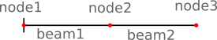
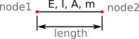
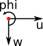

Model
A simple FE-Model is used for the computation. The model consists of multiple beams. Beams are connected by nodes.

A single beam is defined by:
- start, end node
- length
- area, A
- elastic modulus, E
- area moment of inertia, I
- mass, m

Units
The tool works unit independent. That means all values must be provided in compatible units - for instance:
- if length is in m then A must be in m2
- if mass is in kg and length in m, then gravity must be in m/s2 and forces in N.
Coordinate Systems
The overall coordinate system (CSYS) is shown below. The beam axis is x.
Nodes have their own CSYS according to the below figure.

Both systems overlay:
- x = u
- z = w
- rotation around y = phi
Beam Types
Available beam types are:
-
B_2DOF- Bernoulli beam
- start and end node with 2 DOF: w, phi
-
B_2DOF_II- Bernoulli beam
- start and end node with 2 DOF: w, phi
- support of pDelta effects
Best option is to use B_2DOF_II for all computations as allows
to toggle the pDelta effect on and off without modification of the
model definition.
Note: Beam types cannot be mixed within a model.
Mass Elements
Masses are defined by:
- coordinate on the x-axis:
"x" - mass value:
"mass" - mass moment of inertia:
"mmoi"
Masses are assigned to the node closest to the specified x-coordinate. It is allowed to define multiple masses at the same location x; their effect will be combined.
Springs
Springs are defined by:
- coordinate on the x-axis:
"x" - translational spring value:
"w" - rotational spring value:
"phi"
Springs must be defined at exact node locations.
Boundary Conditions
Boundary conditions are defined by:
- coordinate on the x-axis:
"x" - value for:
"w": 0.0,"phi": 0.0
Boundary conditions must be defined at exact node locations. Values must
be set to 0.0, otherwise the BC will not be applied correctly.
Note: It is allowed to define springs and BC for the same node (
x-location). However, the BC will always override the spring.